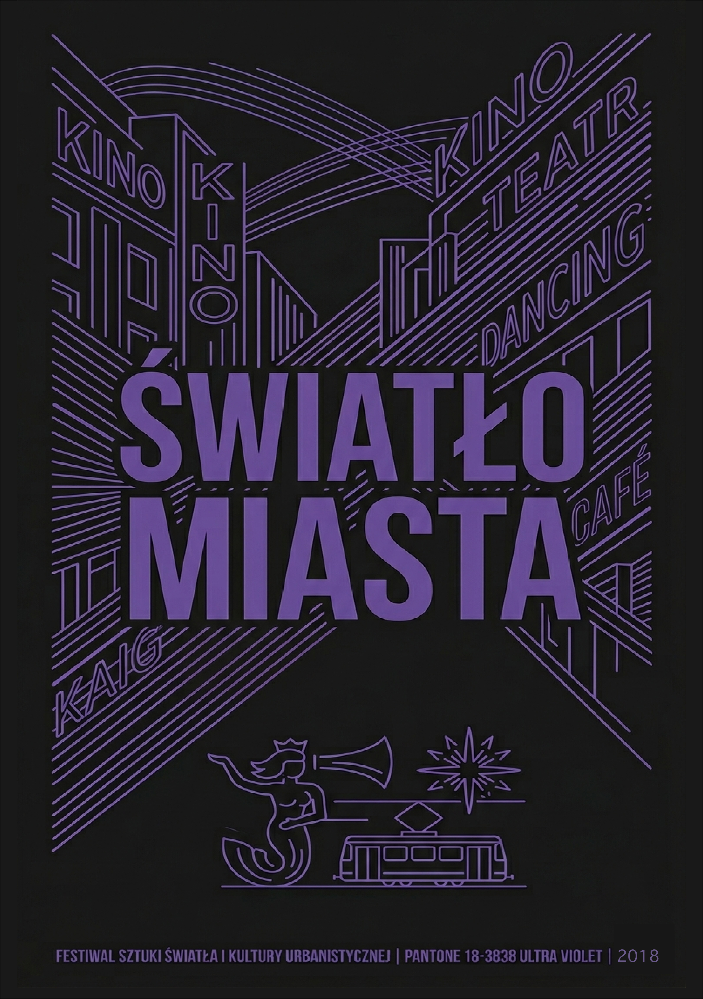
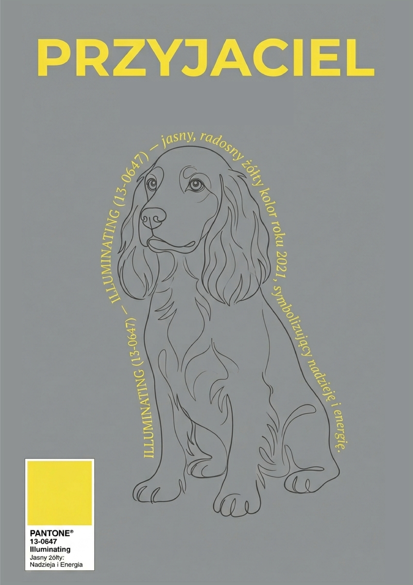
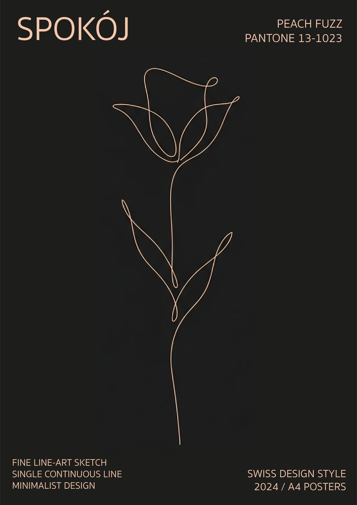

Koncepcja Galerii Artystycznej
Prezentowana kolekcja to autorska interpretacja tego, jak kolor i czysta forma graficzna współgrają z ludzkimi emocjami. Każdy plakat reprezentuje inny stan umysłu, energię oraz unikalny styl projektowy — od surowego minimalizmu po dynamiczną ekspresję geometryczną.
1. Plakat: "Światło Miasta" (Ultra Violet)

Inspiracja: Pantone 18-3838 Ultra Violet.
Opis konceptu: Projekt oddaje pulsującą energię nocnego życia kulturalnego. Głęboki fiolet na czarnym tle budzi skojarzenia z neonami kin, teatrów i kawiarni. Precyzyjne, geometryczne linie tworzą perspektywę nowoczesnego miasta, w którym tradycja (symbol warszawskiej Syrenki i tramwaju) łączy się z futurystycznym klimatem festiwalu światła.
2. Plakat: "Przyjaciel" (Ultimate Gray & Illuminating)

Inspiracja: Duet roku 2021 — Pantone 17-5104 Ultimate Gray & 13-0647 Illuminating.
Opis konceptu: Ten plakat to połączenie stabilności i czystej radości. Spokojne, szare tło symbolizuje wierność i stałość, natomiast jasne, żółte akcenty (w tym tekst układający się w sylwetkę psa) wnoszą optymizm, energię i nadzieję. To wizualna metafora prawdziwej przyjaźni, która rozjaśnia nawet najbardziej szare dni.
3. Plakat: "Spokój" (Peach Fuzz)

Inspiracja: Pantone 13-1023 Peach Fuzz.
Opis konceptu: Wykonany w prestiżowym stylu Swiss Design. Głównym elementem jest minimalistyczny rysunek kwiatu stworzony za pomocą jednej, ciągłej linii (Single Continuous Line). Subtelny, ciepły odcień brzoskwini na ciemnym tle emanuje nowoczesną elegancją, wyciszeniem oraz potrzebą bliskości i wewnętrznej harmonii.
4. Plakat: "Bunt" (Viva Magenta)

Inspiracja: Pantone 18-1750 Viva Magenta.
Opis konceptu: Pełen ekspresji manifest czystej witalności i buntu. Ostre, chaotyczne, geometryczne linie odzwierciedlają wewnętrzną siłę, ruch та odwagę do przełamywania schematów. Intensywny karminowy odcień na jasnym tle stymuluje widza i celebruje wolność artystycznego wyrazu.